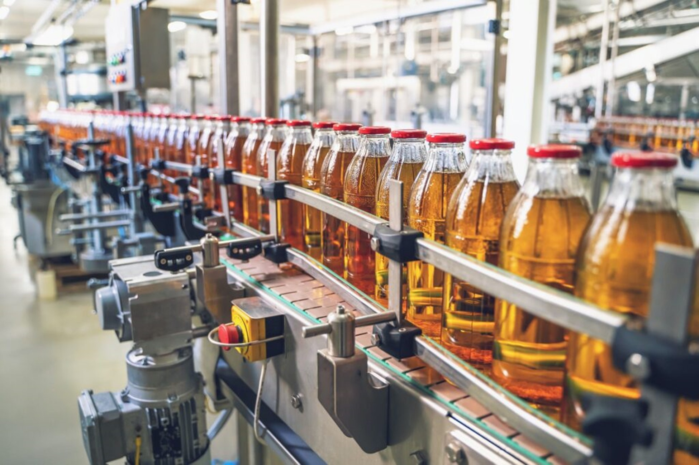
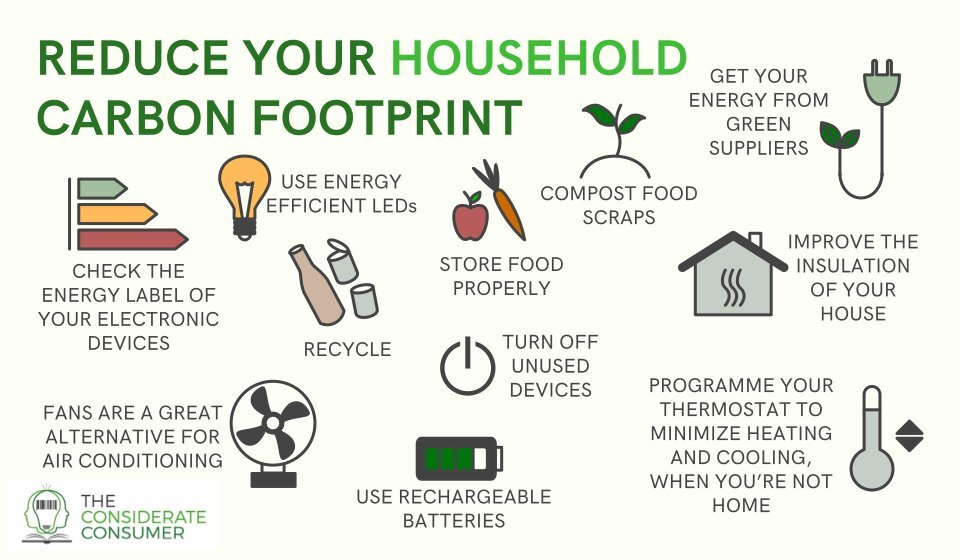

What is a Carbon Footprint?
A carbon footprint is the amount of greenhouse gases (mainly CO₂) caused by human activities. It shows the impact on climate change and applies to individuals, companies, products, or countries.
Types of Carbon Emissions:
-
Direct Emissions
These come from sources you control, like:- Burning fuel in cars or heating.
- Factories and industrial processes.

-
Indirect Emissions
These come from sources you don’t directly control but benefit from, like:- Electricity from power plants.
- Emissions from making and transporting the goods you buy.

-
Product Life Cycle Emissions
Emissions across a product’s life, including:- Making materials, manufacturing, shipping, using, and disposing of the product.

-
Personal Carbon Footprint
Your personal footprint includes:- Transport: Cars, planes, or public transport.
- Home Energy: Heating, cooling, and electricity.
- Diet: Eating meat has a higher footprint than a plant-based diet.
- Waste: Amount and type of waste you produce.

-
Company Carbon Footprint
Companies measure emissions to manage their impact. They track:- Operations: Emissions from their own facilities.
- Supply Chain: Emissions from suppliers.
- Products: Emissions from making and using their products.
 -
Country and Global Carbon Footprints
Countries look at emissions from:- Energy: Coal, oil, or renewable energy.
- Industry: Factories and production.
- Agriculture: Farming and livestock.
- Waste: Emissions from managing waste.

-
Ways to Reduce Carbon Footprints:
- Use Less Energy: Be energy-efficient.
- Switch to Renewables: Solar, wind, etc.
- Choose Greener Transport: Walk, bike, public transit.
- Reduce Waste: Recycle and reuse.
- Offset Emissions: Support projects that capture or cut emissions.
 -
How to Measure Carbon Footprints:
Standards like the Greenhouse Gas Protocol and tools like carbon footprint calculators help people and companies measure their emissions.